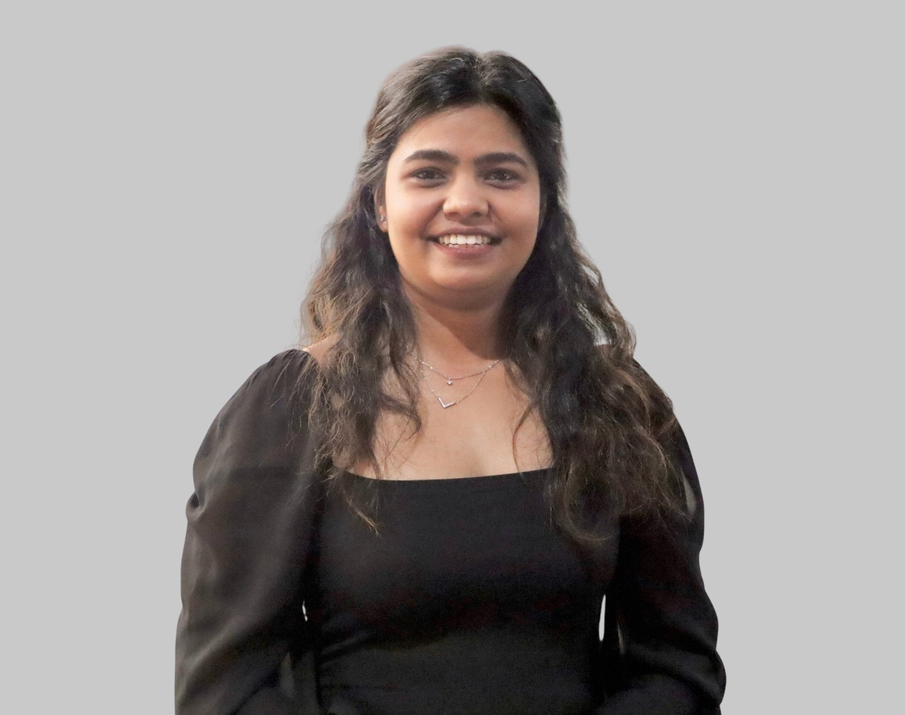
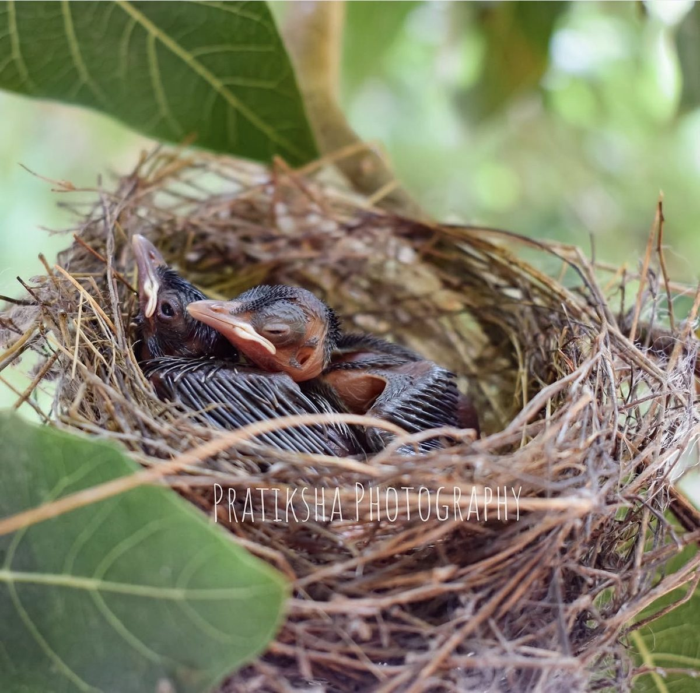
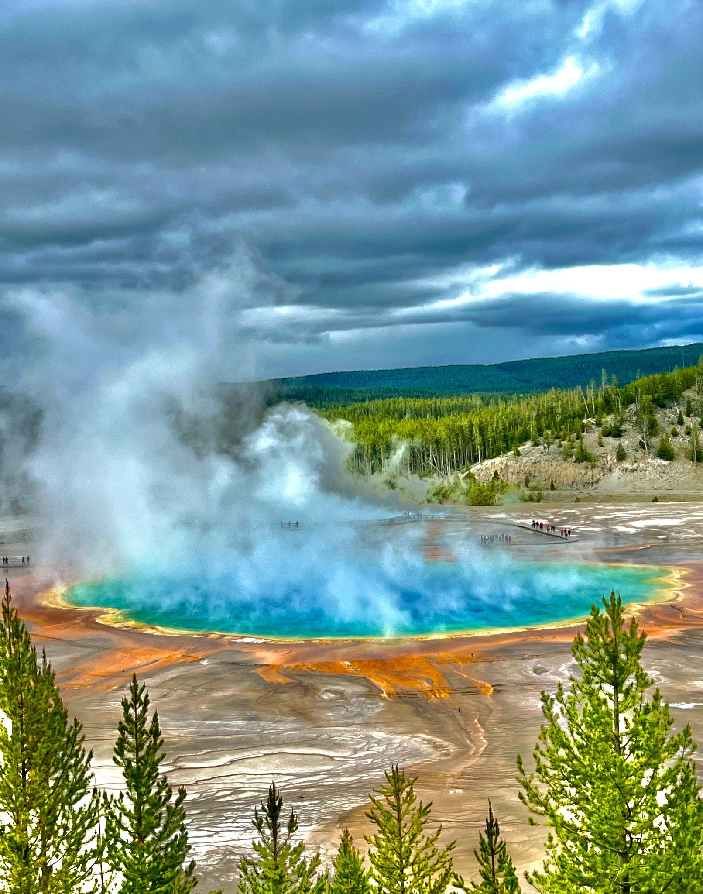
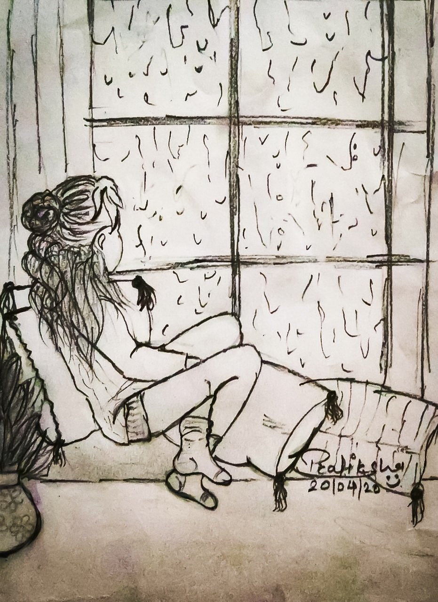
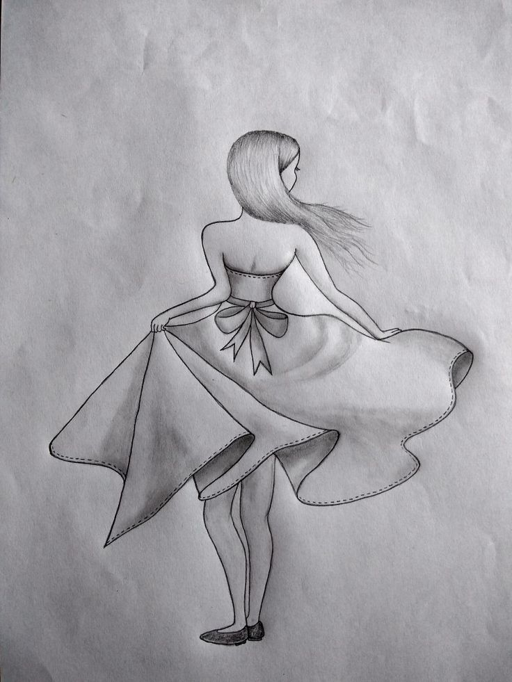

How do machines make sense of what they see?
Scientific imaging, detection, and classification, from particles in moving water to environmental imagery.
PhD Candidate, Computer Science · The University of Alabama
I build deep learning systems that stay reliable when real-world conditions don’t: from adversarially robust smart-building sensing to national-scale water data.
Sometimes through code,
Sometimes through a camera,
Sometimes with a pencil.
Open to full-time Applied Scientist, AI/ML Engineer, and Software Engineer roles

THINGS I THINK ABOUT
Scientific imaging, detection, and classification, from particles in moving water to environmental imagery.
Sensor streams, voice waveforms, and multivariate time series all ask us to find structure in change.
Adversarial attacks, noisy data, and now LLM-driven attacks make trustworthiness part of the engineering problem.
Decades of water data, thousands of catchments, and cloud workflows turn experiments into infrastructure.
Containers, pipelines, CI, access control, and testing are often what make research usable.
A CLOSER LOOK AT WHAT I’VE WORKED ON.
Projects spanning hydrology, scientific imaging, intelligent sensing, and human-centered AI, each shaped by a different question and the technical work required to answer it.
Getting the prediction right was only the first question. Could the system remain trustworthy when deliberately challenged?
My dissertation research progresses from Translution, a hybrid Transformer-CNN architecture that learns local and long-range patterns in multivariate sensor data, to ADS-Guard, a defense framework designed to detect and sanitize adversarial perturbations. Together, the work asks how intelligent sensing can remain accurate and trustworthy when conditions stop being friendly.
What does it take to make national-scale hydrologic data and models actually usable?
My work with CIROH lives between environmental science and software infrastructure, connecting NOAA NextGen/ngen modeling, National Water Model and AORC data, geospatial processing, cloud workflows, containers, configuration generation, testing, and reproducibility into systems researchers can actually run.
Can tiny particles be detected and classified while the water is still moving?
A computer-vision framework for detecting and classifying microplastics under realistic water-monitoring conditions. The study used 4,260 high-resolution images across seven particle categories and introduced Yolov7CS, an attention-enhanced YOLOv7 model integrating channel and spatial attention through CBAM. The system was evaluated across high-resolution, noise-degraded, and real-world imaging conditions, then validated in a water-circulation monitoring platform.
What if intelligent feedback could respond while you perform?
The AI Voice Coach explores a more human side of intelligent systems: combining voice signals, waveform information, body visualization, and synchronized feedback into an interactive experience for singers. Here, the challenge isn't only understanding a signal. It is deciding how an intelligent system should communicate what it understands back to a person.
SMALLER BUILDS, SHARPER QUESTIONS.
Self-directed projects that take the robustness questions from my dissertation into marketplace integrity, fraud, and the systems that put models in front of people.
Compared classic word-substitution attacks with LLM rewrites (Qwen2.5) against a fine-tuned DistilRoBERTa fake-review detector, then hardened it with adversarial training on 1,000 LLM rewrites.
Illicit-transaction detection on the Elliptic Bitcoin graph (203,769 transactions) under a strict temporal split, comparing logistic regression, XGBoost, GCN, GraphSAGE, and hybrids.
A role-based platform for running local LLMs in research settings: Keycloak sign-in (OIDC/JWT), Student, Faculty and admin roles, a FastAPI gateway for chat and side-by-side model comparison, and admin-only usage analytics and security audit logs.
A full-stack issue tracker with a validated REST API, search and filtering, a dashboard, automated backend tests, and CI on every push.
WHAT I REACH FOR.
PyTorch · TensorFlow · Hugging Face Transformers · scikit-learn · XGBoost · PyTorch Geometric · OpenCV · YOLO
Time series · Computer vision · Adversarial robustness (FGSM, PGD) · LLM attacks & defenses · Graph ML · Hydrologic ML
Docker · Kubernetes · AWS · GCP · Azure · GitHub Actions · Terraform · Linux · HPC & parallel computing
Python · Java · TypeScript · Bash · React · FastAPI · Flask · Spring Boot · SQL & NoSQL · Pytest · JUnit
PhD, Computer Science
The University of Alabama
MS, Computer Science
The University of Alabama
BE, Computer Engineering
Savitribai Phule Pune University
SOME QUESTIONS BECAME PAPERS.
Pratiksha Chaudhari, Yang Xiao, Wei Sun
Pratiksha Chaudhari et al.
Rong Fu, Kai Liu, Xinyu Zhang, Pratiksha Chaudhari, et al.
Pratiksha Chaudhari, Yang Xiao, Mark Ming-Cheng Cheng, Tieshan Li
RESEARCH, OUT LOUD.
American Geophysical Union (AGU) · New Orleans, LA
American Geophysical Union (AGU) · New Orleans, LA
CIROH DevCon · Burlington, VT
CIROH DevCon · Salt Lake City, UT
Department of Computer Science · The University of Alabama · 2025. Distilling years of research into three clear minutes sharpened how I communicate technical work beyond the lab.
The University of Alabama · 2024–2025. Leadership recognition for student organization service and impact.
Global Tide Mentor & International Peer Advisory Council Member · The University of Alabama · 2025–2026
President, Indian Students Association of Tuscaloosa · The University of Alabama · 2024–2025
Vice President, Indian Students Association of Tuscaloosa · The University of Alabama · 2023–2024
Secretary, UA Vedic Society · The University of Alabama · 2023–2024
Secretary, Indian Students Association of Tuscaloosa · The University of Alabama · 2022–2023
Reviewer · Energy and Buildings (Elsevier) · IEEE GLOBECOM, Machine Learning for Communications track · WUWNet ’21, International Conference on Underwater Networks & Systems
Judge · Alabama Robotics Competition, The University of Alabama (2023, 2024, 2025) · Undergraduate Research & Creative Activity Conference, The University of Alabama (2025)
Traveling, photography, and sketching give me a different pace for the same habit: pay attention.
@her_perspective_05 ↗

The subject changes, but the instinct is the same: slow down enough to notice what is there.


I’m interested in research and engineering opportunities across machine learning, scientific computing, computer vision, and intelligent systems.